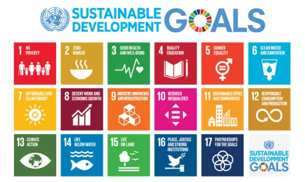

Soddisfare i bisogni della generazione presente senza compromettere quelli della generazione futura” è la definizione ufficiale di sviluppo sostenibile. Ma perché è così importante perseguire questo fine? I 17 Obiettivi di sviluppo sostenibile definiscono un nuovo modello di società, secondo criteri di maggior responsabilità in termini sociali, ambientali ed economici, finalizzati ad evitare il collasso dell’ecosistema terrestre.
Il rapporto identifica per la prima volta la sostenibilità come la condizione di uno sviluppo in grado di “assicurare il soddisfacimento dei bisogni della generazione presente senza compromettere la possibilità delle generazioni future di realizzare i propri”. Definizione di sostenibilità: "assicurare il soddisfacimento dei bisogni della generazione presente senza compromettere la possibilità delle generazioni future di realizzare i propri" L’enciclopedia Treccani aggiunge che il concetto di sostenibilità, rispetto alle sue prime versioni, ha fatto registrare “una profonda evoluzione che, partendo da una visione centrata preminentemente sugli aspetti ecologici, è approdata verso un significato più globale, che tenesse conto, oltre che della dimensione ambientale, di quella economica e di quella sociale. I tre aspetti sono stati comunque considerati in un rapporto sinergico e sistemico e, combinati tra loro in diversa misura, sono stati impiegati per giungere a una definizione di progresso e di benessere che superasse in qualche modo le tradizionali misure della ricchezza e della crescita economica basate sul Pil“. In definitiva, la sostenibilità implica “un benessere (ambientale, sociale, economico) costante e preferibilmente crescente e la prospettiva di lasciare alle generazioni future una qualità della vita non inferiore a quella attuale“. Tuttavia, è importante considerare che la sostenibilità è un concetto in continuo mutamento. Le interazioni tra il sistema ecologico e quello antropico possono essere influenzate dalla rapida evoluzione del panorama tecnologico, il quale potrebbe modificare i vincoli legati, ad esempio, all’utilizzo delle fonti energetiche.
L'obiettivo primario della sostenibilità ambientale è quello di preservare le risorse del Pianeta. Questo punto cardine può essere raggiunto in diversi modi: adottando fonti di energia sostenibili e rinnovabili, quindi abbandonando le fonti fossili. In un mondo sempre più green, lo stato di salute del pianeta impone che i cittadini intraprendano la strada della sostenibilità energetica e della riduzione dell’impatto della nostra vita sull’ambiente. Da questo scenario sorge la cosiddetta economia ambientale. L’economia dell’ambiente si occupa delle problematiche e delle scelte ambientali e studia gli effetti della crescita economica sulle funzioni dell’ambiente. Essa tiene conto del consumatore, dell’efficienza del mercato e del meccanismo dei prezzi. L’economia dell’ambiente è diversa dall’economia ecologica, la quale intende l’economia come un sub-sistema e si focalizza sul mantenimento del capitale naturale. Gli economisti ambientali si occupano di temi quali il livello di inquinamento accettabile da un sistema e gli strumenti di politica economica collegati, l’analisi della legislazione ambientale e degli accordi internazionali per la protezione delle risorse ambientali e la valutazione dei beni extra-mercato. Anche detta economia circolare, l’economia ambientale è un modello di produzione e consumo che implica condivisione, prestito, riutilizzo, riparazione, ricondizionamento e riciclo dei prodotti, in modo da allungare il loro di vita e ridurre la produzione di rifiuti. I prodotti inutilizzabili vengono poi trasformati e reintrodotti nel ciclo economico per generare ulteriore valore in un’altra forma. Il passaggio ad un’economia circolare, dove tutto ciò che si consuma non si getta ma si ricicla, porta anche questi vantaggi: riduzione dell’impatto sull’ambiente meno spreco di materie prime impulso all’innovazione e alla crescita economica Con l’economia circolare i consumatori avranno a disposizione prodotti più durevoli che miglioreranno la qualità di vita.
Eco-friendly, green-living ed ecosostenibile sono parole sempre più usate e forse abusate in ogni contesto, dalla pubblicità al commercio dei prodotti sul mercato. Ma cosa significa davvero eco-friendly? Quali sono le attività sostenibili e gli ambiti d’intervento? Essere eco-friendly significa essere cosciente di un fenomeno che può salvare il Pianeta, trasformandolo in un luogo migliore per il presente e per il futuro. I termini sopracitati sono perciò sinonimi e vogliono esprimere la loro “amicizia” e vicinanza nei confronti del Pianeta. Tutto ciò che è eco-friendly non è nocivo per l‘ambiente. Uno stile di vita eco-friendly ha cura anche degli animali, delle piante e dell’intero ecosistema. Essere earth–friendly, amici della Terra, è possibile se ci si ricorda che siamo ospiti di un mondo che è di tutti e che pertanto va rispettato e preservato per le generazioni future. Le prove di ciò che sta accadendo le abbiamo ogni giorno, con la morte dei pesci nel loro stesso habitat, con la scomparsa graduale delle colture e con la morte delle persone per mancanza di cibo nei paesi in via di sviluppo (quando le persone lasciano la propria terra a causa dei cambiamenti climatici si parla di migranti climatici). La terra e i ghiacciai si restringono, la flora e la fauna cambiano e bisogna fare qualcosa subito. Anche la tecnologia e i prodotti più recenti creano danni all’ambiente, costringendo tante persone a cambiare il proprio modo di vivere, a partire dalla ricerca di prodotti ecologici. Ecco alcune delle attività eco-compatibili più semplici da poter adottare da subito: car sharing riciclaggio e compostaggio orto prodotti locali o a km zero riparare anziché buttare riutilizzare e abolire l’usa e getta scegliere prodotti a basso impatto ambientale e con poco packaging camminare o andare in bicicletta ridurre l’utilizzo delle luci in casa e optare per l’energia proveniente da fonti rinnovabili stendere i panni invece di usare l’asciugatrice utilizzare software per tecnologie ambientali in grado di rendere più eco-sostenibili procedure e attività Oggi il consumatore vuole informarsi, per questo le aziende hanno iniziato a investire sull’eco-friendly e sull’elaborazione di prodotti ecologici, per creare nuove imprese ecosostenibili ed ecosolidali. Non tutti i prodotti eco-friendly, però, sono sicuri per l‘ambiente. Controllare le etichette o cercare informazioni e recensioni su internet aiuta a distinguere tra prodotti davvero ecosostenibili e prodotti ancora dannosi per l’ambiente.